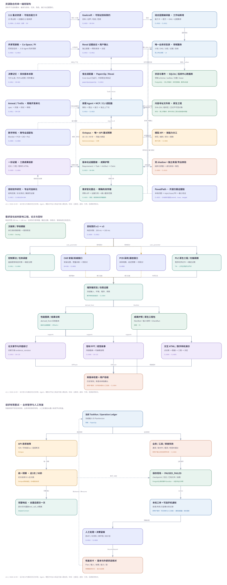

THESIS ATELIER / DESIGN REVIEW v2.1
真实交付：资源、设计、交互原型与图。示例执行与论文产物为模拟，专业工具待接入验证。
111 重点资源融合方案 v2.1
本方案已并入v3.0统一实施路线，详见仓库 docs/开发实施方案-v3.0.md；当前实际控制面为Python/FastAPI/SQLite。下列资源机制与组合继续保留，宿主与专业工具状态以v3实施方案为准。
这次围绕你优先收藏的资源重新设计工作站：让每个有价值的思路进入实际流程、形成可检查的交接和看得见的产品行为。原有八份资料、884 条索引、96 个岗位、215 个节点和专业分支继续作为基础。
1. 这次怎样使用你的重点资源
按笔记路径解码后筛选文件名以 111 开头的条目，共 23 条记录、22 个主题。两份 React 组件库笔记为同一主题；资源编号 GH-111 和标题中间包含 111 的条目不计入这个集合。CL 编号和非 GitHub 索引的 C 编号不能直接互换，关联依据是原笔记路径。
完整去向见 111重点资源融合清单.csv、Excel 的“111重点融合”页和 research/111-resource-audit.json。逐条保留采用位置、合作资源、输入输出、缺口与验证条件；没有正文、原工程或可验证接口的资料保留为候选。开源项目的固定版本与文件级协议证据另见 research/111-repo-evidence.json。
本次实际交付的是可交互设计和可继续开发的配置。原型内的会议、工具执行、审核和恢复是模拟；固定提交、核心协议核对与浏览器交互检查是真实完成的工作。CL-0012 原索引没有 GitHub 链接，Notes 属于主题相近的配套候选，并非已证实同一原帖项目。将方法落实到设计不等于已部署第三方执行器。
2. 七套可以组合的工作方式
| 融合方式 | 你的重点资源 + 合作资源 | Agent 的分工与交接 | 你实际得到的行为 |
|---|
| 目标契约工厂 | CL-0020 Goalcraft + CL-0004 双影子审计 + CL-0012 项目维护思路；配合 Notes、Paperclip 与已有任务契约 | 需求员提炼原任务，专业负责人定义验证办法；质量审计员和目标审计员独立只读检查，决策员归档 | 模糊目标变成带来源、约束、输出和检查条件的合同；缺材料不能被填成假事实，审计沉默不能当通过 |
| 共享研究驾驶舱 | CL-0010 PI-Desktop + CL-0015 Rovai + CL-0016 Co-Space + CL-0025 WebCodex + CL-0026 AgentDock；配合 Paperclip | 项目负责人分工，专家最多两轮讨论；桌面/远程工具领固定能力任务，共享资料以版本化快照交接 | 同一个项目可围观执行、召开专家会诊、跨设备收回产物；聊天、面板和任务读取同一业务状态 |
| 科研证据活页 | CL-0019 科研/Zotero 经验 + CL-0023 GitHub 方案研究 + CL-0009 HTML 输出；配合 Paper Search、getbib、Docling、OfficeCLI | 文献员和工程研究员并行查证，证据员登记页码/对象，章节员引用证据，独立引用员核验 | 每个结论能回到真实来源；从参考文献、实验到章节共享一张证据图，更新只触发有依赖的内容 |
| 跨专业数字样机 | CL-0005 Blender 案例 + CL-0008 PCB Skill 线索；配合 CAD-Agent-Hub、嘉立创操作笔记、TIA/CODESYS | 机械、电路、控制 Agent 按有向依赖并行制作；集成员对照接口，专业检查员校验原生工程 | 从结构、控制、电路到动画连成一个课题；尺寸、编译、DRC/求解报告与展示图分别验收 |
| 规格开发流水线 | CL-0011 Anneal + CL-0023 GitHub Solution Research + CL-0004 双审计 + CL-0012 项目维护思路；配合 Notes、Trellis | 研究员先核对现有方案，规格员拆任务，编码员制作，测试员与目标审计员独立检查 | 开发工作站本身与计算机毕设都有可追溯规格；修复带版本证据、否决方案和本地验证，失败保留现场 |
| 证据答辩联动 | CL-0006 image2 提示 + CL-0009 HTML 输出 + CL-0017 UI Guide + CL-0021/0022 React 组件；配合 OfficeCLI、Archify、drawio | 叙事员从已检查证据组织论点，视觉员做图，演示制作员生成可编辑文件，检查员核对数值与出处 | 一组已检查证据投影为论文图、互动展示、可编辑答辩页和讲稿；改数据时同步指出受影响页面 |
| 授权软件研究选装 | CL-0013 网站模块溯源 + CL-0014 APK 研究 + CL-0023 方案研究 + UI/组件资源 | 研究员整理用户提供的应用/网页材料，结构员生成模块树，编码员实现，审计员检查溯源与行为 | 计算机或移动端课题可比较既有系统、建立模块结构与改进路线；按实际材料和已验证入口启用 |
这里的“组合”可选择、可裁剪：计算机课题不启动 CAD；机械课题没有电路要求就不加入 PCB；论文前期材料可以先用科研证据与目标契约。每套组合都写入 config/fusion-blueprints.json，保留来源、岗位、步骤、交接、人类关卡与就绪条件。
浏览器原型的组合编译只生成演示蓝图。生产编译器需要真实需求和能力注册表，按 requires_capability 与 depends_on 构造 DAG，检查引用完整、无循环、没有重复主调度器，再生成任务；缺失能力返回待接入清单，不能伪装成可执行。
3. 一个课题如何把这些创意融合起来
以“智能分拣输送装置”为跨专业设计样例。目标契约先记录吞吐量、载荷、控制功能、学校材料和验收方法；示例数值是占位演示，真实值来自任务书。
机械 Agent 设计机构，电路 Agent 设计检测接口，PLC Agent 实现分拣逻辑。三者先就尺寸、供电、信号、时序形成有证据的接口决定，再并行推进。集成 Agent 接收原生工程及检查报告，Blender 负责展示运动过程；动画展示与工程校核都有明确输出，后者通过才允许展示中的技术结论进入论文。
研究员提供真实全文、标准和既有方案，章节员引用具体证据对象，答辩员复用同一组检查过的图与结论。Goalcraft 负责完成标准，Rovai 思路负责专家讨论，Co-Space 思路负责项目共享，双影子负责独立复核，Notes 负责有效决定与否决理由，HTML 负责可视化解释；各自有用途和交接边界。
当你调整一个参数时，系统先展示影响范围。例如电源规格变化会影响电路/BOM、相关验证、系统图、硬件章节与对应答辩页；没有依赖关系的文献条目和机械部件保留原检查记录。原型演示这类依赖变化，生产系统必须从真实输入与文件哈希建立连线，不能仅凭模型猜测哪些成果没受影响。
4. 四个真实协议怎样进入产品
4.1 Goalcraft 的目标门禁
固定版本 SKILL 的 G1–G4 转成组合编译门禁：无占位、命令真实、结果可观察、权限诚实。它们要求每项工作给出真实输入、已验证能力、具体输出和可执行检查；在用户确认生产方案前，缺失信息必须显式列出。
工作站把自由文本目标结构化为 RequirementContract。目标提炼员不能抹掉学校要求或专业约束；重大变更仍需形成新的 PlanVersion。配置在 config/fusion-gate-policy.json。
4.2 双影子审计与轮次隔离
pi-shadow-mind 的默认只读工具和按 generation 汇总思路用于双审计：工程质量与原始目标分别由不同成员检查；作者和检查者不是同一实例，两名检查者也独立。
产品关卡要求明确 pass/fail、证据引用与输入输出哈希。工具无返回、没有发现报告、审计沉默都属于 pending。旧 generation 的通过记录可查看但不能放行新版本。不能假设审计插件本身提供文件锁，文件独占仍由工作站资源锁负责。
4.3 HTML 活页与变化对照
answer-me-with-html 的局部 panel patch、变更前后对照、真实文件/行号引用进入证据展示：更新某一对象时只刷新相关展示块，保留原版本；草图必须标明 sketch。显示“已检查”需要真检查记录，“已验收”需要冻结 manifest 与用户验收记录。
这个设计把原来的产物列表变成可解释的活页：用户能查看数值为何变化、哪些章节仍有效、哪些答辩页等待重制。原型实现状态与对照展示；完整字段契约见 config/evidence-impact.schema.json。
4.4 GitHub 方案研究先于自行实现
PavedPath 的本地问题描述、版本/issue/已合并 PR 证据、最小适配和本地验证进入资源研究任务。研究 Agent 交付候选、选用理由、否决项、固定提交和验证命令；项目负责人对去重后的证据进行核验。不能把相关标题、star 数或论坛宣传当成接口可用证明。
这条路径同时服务工作站开发与用户课题：能复用成熟模块就适配；不适配的原因写入 Notes，让接手 Agent 不再重复走相同弯路。
5. 统一编排、文件与恢复
资源融合编译器位于需求确认与任务派发之间。统一领域服务持有目标、方案、任务、决定、证据和验收；v3已实现 Core-local 派发，Paperclip / Rovai 作为待验证的团队与执行宿主适配器。Rovai/Co-Space/PI 的协作或宿主能力映射到这个状态，Anneal 是开发链候选，不能各自维护互相竞争的生产任务状态。
前端通过同一 API/SSE 读取业务事件；PostgreSQL 保存事务、版本和依赖边；对象存储保存原件、原生工程、日志、报告与最终文件。每次提交绑定 project_id、plan_version、generation、输入/输出哈希；内容变更生成新版本，已验收历史保持可追溯。证据规模尚小时用关系库递归查询即可，首版无需再引入图数据库。
按需启动已有岗位，建议 4–8 个并行槽位，会议至多两轮。96 个岗位是角色库，不能当成 96 个常驻模型会话。共享桌面/CAD/文档单写入锁和运行回执由域服务管理。
模型 API 仍由单一网关管理总计最多 3 次请求、总窗口 90 秒的默认预算；仅在已验证同能力渠道中切换。工程检查失败、版本不符或工具结果不确定时保存检查点，停止失败节点及其依赖，等待人工处理；其他独立项目继续。重启时核对真实运行状态；不盲目重放外部副作用。
交互图 资源融合编排架构.html 提供系统、证据影响和恢复视图，节点可查看输入输出与来源；SVG/PDF/Mermaid 可单独分享。
6. 首版范围与成本变化
第一版真实闭环优先采用目标契约、科研证据、双审计、决策记忆和一个统一驾驶舱，在原 G01–G16 开题/外文路线验证。接着验证一个计算机课题的规格开发与证据答辩；跨专业样机保留完整蓝图，按 Windows 软件、许可、适配器自测逐条接入。
新增强功能的退出条件是：真实任务书可生成合同；缺失能力不能误放行；旧轮次报告不能批准新成果；变更按真实依赖标过期；独立双审计及用户验收分开；故障恢复不破坏历史。不能以原型模拟通过替代这些实机检查。
原方案 28–43 人日的估算之外，若新增完整的组合编译、文件级证据变更传播和局部对照展示，暂加 5–9 人日，其中包括版本门禁、适配器映射和真实样例验证；合计约 33–52 人日。它们是有依赖的设计估算，原流程已有相关模块时应去重，不能机械相加；专业软件接入另估。
费用沿用真实渠道的输入/输出 Token 单价计算。双审计和专家讨论增加调用；按需激活、只读差异与相关证据切片减少重复上下文。示例每次修订若两名审计员各输入 12k、输出 2k Token，在人为假设输入 20 元/M、输出 80 元/M 时为 0.8 元；20%余量约 0.96 元。这是说明计费方法的情景，非渠道报价，较大的代码/论文或多次失败会增加费用。
核心结构化检查、依赖遍历、哈希计算和文件投影更新由程序完成。模型负责判断与内容工作，不能用大模型替代数据库状态或文件校验。
7. 缺口与采用顺序
优先资料中 PCB 原正文/工程、UI Guide 精确项目入口、image2 模型与可编辑导出链，以及部分远程工具接口仍需补证。此时可以评估交互和契约，不能声称这些执行链已经可运行。React 的两份同源记录共享一个采用位置和主题标识。
Chromix、CF Skill 与 Keysmith 均保留逐条去向，但核心课题流程不依赖这些方案。网页采集保留可见失败、用户已有资料导入和人工处理路径；API 错误分别记录认证、能力、连接和结果状态，不能把改模型行为当成所有故障的修复。是否增加某个选装工具由真实课题需要、材料、接口和验证决定。
当前无需你补充任何秘密或账户信息。评审重点是七套组合是否符合你的工作方式、哪条专业路线先验证，以及需要保留哪些选装；真实任务书、学校模板、专业软件版本和缺失原笔记在实施相应链路时再落实。
8. 建议你这样评估
- 打开
资源融合实验室.html，先看“目标契约”和“跨专业数字样机”中每份 111 资源的去向。 - 选择专业和选装能力，编译演示蓝图并查看岗位、交接、关卡和待接入条件。
- 走一轮讨论与双审计，观察报告不齐及旧版本报告为什么不能通过。
- 修改示例参数，查看受影响证据、章节和答辩内容，确认无依赖的部分继续保留。
- 注入 API 或检查失败，保存现场后人工恢复，再导出蓝图/评估 JSON。
- 打开资源融合编排架构查看这些功能如何连接前后端、文件、模型 API 与统一恢复。
资源融合编排示意

需求、组合编译、统一调度、版本证据与人工恢复。